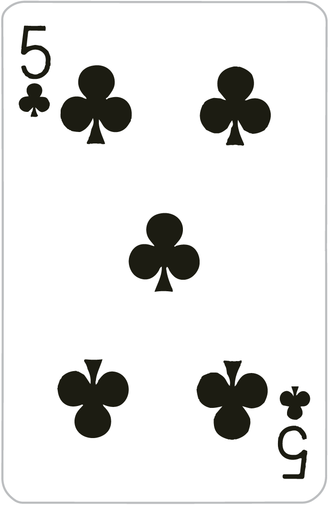

Exercício Programa: Bacará Simplificado¶
Data de entrega: 06/10/2020, via GitHub
Este trabalho pode ser feito individualmente ou em duplas
Introdução¶
Neste Exercício Programa (EP) vocês desenvolverão um jogo de Bacará simplificado, que é um jogo rápido de cartas presente em muitos cassinos. O jogo consiste de uma disputa entre o jogador e o banco pela soma de cartas mais próxima de 9. A única interação do jogador é apostar em quem será o vencedor da partida (jogador, banco ou empate). Todo o restante do jogo é realizado pela mesa de acordo com as regras simplificadas (elas não cobrem todas as possibilidades de um jogo real) apresentadas abaixo. As apostas serão sempre de números inteiros positivos de fichas e o jogador começa com uma quantidade de fichas definida por você.
Regras¶
Inicialmente o jogador realiza sua aposta colocando a quantidade de fichas que quiser em quem acredita ser o vencedor (jogador, banco ou empate). A partir desse momento a mesa realiza todo o restante do jogo automaticamente.
É utilizado um baralho completo, com 52 cartas. Inicialmente a mesa embaralha as cartas e distribui duas para o jogador e duas para o banco. Se a soma das cartas (veja as regras da soma das cartas aqui) do jogador ou do banco for igual a 8 ou 9 o jogo termina e as apostas são pagas (veja as regras do pagamento das apostas aqui).
Se a soma das cartas tanto do jogador quanto do banco forem diferentes de 8 ou 9, a mesa decide se distribuirá uma terceira carta a cada um de acordo com as regras a seguir, começando pelo jogador e depois distribuindo a carta do banco:
- Se a soma das cartas for 6 ou 7, não distribui mais uma carta;
- Se a soma das cartas for 5 ou menos, distribui mais uma carta e a soma é recalculada.
Alguns exemplos:
Se o jogador obteve as cartas:


e o banco obteve as cartas:


O jogador recebe mais uma carta, pois a sua soma foi 5. O banco não recebe nenhuma carta, pois sua soma já é 7.
Soma das cartas¶
Os valores das cartas seguem a tabela a seguir:
| Carta | Valor |
|---|---|
A |
1 |
2 |
2 |
3 |
3 |
4 |
4 |
5 |
5 |
6 |
6 |
7 |
7 |
8 |
8 |
9 |
9 |
10 |
0 |
J |
0 |
Q |
0 |
K |
0 |
Importante: se a soma das cartas for maior ou igual a 10, considera-se apenas a unidade.
Exemplos:
Soma 7 = 1 + 6:


Soma 2 (8 + 0 + 4 = 12, considerando apenas a unidade):


Soma 7:


Pagamento das apostas¶
O jogador perde as fichas apostadas se não tiver apostado no vencedor. Caso contrário, a quantidade de fichas recebidas depende de quem foi o vencedor da partida:
- Jogador: se o jogador venceu a partida (obteve a soma mais próxima de 9), a mesa paga a mesma quantidade de fichas apostadas. Por exemplo, se o jogador apostou 10 fichas, ele receberá outras 10 fichas.
- Banco: se o banco venceu a partida, a mesa paga 95% das fichas apostadas. Por exemplo, se o jogador apostou 20 fichas, ele receberá outras 19.
- Empate: se ocorreu um empate, a mesa paga 8 vezes a quantidade de fichas apostadas. Por exemplo, se o jogador apostou 10 fichas, ele receberá outras 80.0
Mais exemplos¶
Exemplo 1¶
A seguir apresentamos exemplos de uma partida completa:
- O jogador possui 100 fichas;
- Aposta 10 fichas no banco;
- A mesa distribui as cartas. O jogador recebe:
- O banco recebe:

- Como a soma das cartas do jogador é igual a 8, a partida termina;
- O jogador perde as 10 fichas apostadas, pois apostou que o banco venceria.
Nessa partida, se o jogador tivesse apostado que ele seria o vencedor, ele ganharia mais 10 fichas, ficando com 110 fichas ao final da partida.
Exemplo 2¶
- O jogador possui 100 fichas;
- Aposta 20 fichas em si mesmo;
- A mesa distribui as cartas. O jogador recebe:


- O banco recebe:

- Como a soma das cartas do jogador é igual a 7, ele não recebe mais cartas;
- Como a soma das cartas do banco é igual a 2, ele recebe mais uma carta. Agora o banco possui as seguintes cartas:

- A soma das cartas do banco é igual a 7. Ocorreu um empate;
- O jogador perde as 20 fichas apostadas, pois apostou que ele venceria.
Se o jogador tivesse apostado em empate, ele receberia mais 160 fichas, ficando com 260 fichas ao final da partida.
Exemplo 3¶
- O jogador possui 100 fichas;
- Aposta 40 fichas no empate;
- A mesa distribui as cartas. O jogador recebe:

- O banco recebe:

- Como a soma das cartas do jogador é igual a 0, ele recebe mais uma carta. Agora o jogador possui as seguintes cartas:
- A soma das cartas do jogador é igual a 5;
- Como a soma das cartas do banco é igual a 3, ele recebe mais uma carta. Agora o banco possui as seguintes cartas:

- A soma das cartas do banco é igual a 9. O banco venceu;
- O jogador perde as 40 fichas apostadas, pois apostou que ocorreria empate.
Se o jogador tivesse apostado no banco, ele receberia mais 38 fichas, ficando com 138 fichas ao final da partida.
Regras avançadas¶
Importante: as regras a seguir devem ser implementadas para se obter conceito maior ou igual a B.
Múltiplos baralhos¶
Regras alternativas do Bacará permitem o uso de 6 ou 8 baralhos. Assim, ao invés de 52 cartas são utilizadas 312 ou 416 cartas, respectivamente. Todo o restante do jogo permanece o mesmo.
Múltiplos jogadores¶
É possível que mais de um jogador participe das apostas. Cada jogador aposta a quantidade de fichas que quiser em quem acreditar ser o vencedor. As cartas de jogador são as mesmas para todos. Ou seja, é equivalente a ocorrerem diversos jogos ao mesmo tempo, um para cada jogador, mas as cartas sorteadas são as mesmas em todas as mesas. Ao final da partida cada jogador recebe ou paga o resultado das suas apostas.
Comissão da casa¶
Em cassinos é comum existir uma comissão sobre as apostas recebidas no Bacará. Se o jogador perde a aposta ele não paga nada de comissão nessa partida. Entretanto, se ele ganha a aposta, é necessário pagar uma porcentagem do que ele for receber para a casa. Por exemplo, se a taxa de comissão for 1% e o jogador for receber 10 fichas por ter vencido a aposta, ele receberá 9 fichas, pois deverá pagar 1 como comissão.
As taxas de comissão dependem de quem foi o vencedor da partida (jogador, banco ou empate) e da quantidade de baralhos. A tabela a seguir resume as taxas para cada caso:
| Vencedor | 1 baralho | 6 baralhos | 8 baralhos |
|---|---|---|---|
| Jogador | 1.29% | 1.24% | 1.24% |
| Banco | 1.01% | 1.06% | 1.06% |
| Empate | 15.75% | 14.44% | 14.36% |
Por exemplo, se o jogador apostou 10.000 fichas no banco em um jogo com 6 baralhos e o banco foi o vencedor da partida, ele receberá 10.000 - 10.000\cdot 0,0106 = 9894 fichas como pagamento.
Mais regras para a distribuição da terceira carta¶
As regras apresentadas anteriormente são simplificadas. Uma partida real de Bacará possui regras um pouco mais complexas para decidir se a terceira carta será distribuída. Para as regras a seguir é necessário assumir que a decisão de distribuir ou não a terceira carta do jogador será tomada antes da decisão de distribuir a terceira carta do banco.
A regra para a terceira carta do jogador não muda. Se a soma das suas duas cartas for igual ou menor a 5 e a soma das cartas do banco for diferente de 8 e 9, o jogador recebe a terceira carta.
A regra para a terceira carta do banco depende da soma das suas duas cartas e da terceira carta do jogador:
- Se a soma das duas cartas do banco for igual a 6 ou mais, ele não recebe a terceira carta;
- Se o jogador não recebeu uma terceira carta e a soma das duas cartas do banco for menor ou igual a 5, ele recebe a terceira carta;
- Se o jogador recebeu uma terceira carta e a soma das duas cartas do banco for menor ou igual a 5, ele pode ou não receber a terceira carta e a decisão é tomada de acordo com a tabela a seguir (cada coluna representa o valor da terceira carta recebida pelo jogador, de 0 a 9, se o valor for S significa que a terceira carta do banco é distribuída, se for N o banco não recebe uma terceira carta):
| Soma do banco | 0 | 1 | 2 | 3 | 4 | 5 | 6 | 7 | 8 | 9 |
|---|---|---|---|---|---|---|---|---|---|---|
| 0 | S | S | S | S | S | S | S | S | S | S |
| 1 | S | S | S | S | S | S | S | S | S | S |
| 2 | S | S | S | S | S | S | S | S | S | S |
| 3 | S | S | S | S | S | S | S | S | N | S |
| 4 | N | N | S | S | S | S | S | S | N | N |
| 5 | N | N | N | N | S | S | S | S | N | N |
| 6 | N | N | N | N | N | N | S | S | N | N |
| 7 | N | N | N | N | N | N | N | N | N | N |
Por exemplo, se a terceira carta do jogador foi 3 e a soma das duas cartas do banco é 5, o banco não recebe a terceira carta. Se a terceira carta do jogador foi 2 e a soma das duas cartas do banco é 4, o banco recebe a terceira carta.
Rubricas dos Objetivos de Aprendizagem¶
Os objetivos de aprendizagem e as correspondentes rubricas de avaliação são os seguintes:
Objetivo: Desenvolver programas de computador
| I | D | C | B até A+ |
|---|---|---|---|
| Não implementou nem as regras básicas. | Implementou algumas das regras básicas, mas o código não funciona (dá erro ao executar). | Implementou todas as regras básicas, mas não funciona para alguns casos. | Funciona para todas as regras básicas e implementou as regras avançadas. Cada regra avançada implementada corretamente adiciona meio conceito. |
Objetivo: Atuar em uma equipe gerenciada por métodos ágeis
| I | D | C | B / A |
|---|---|---|---|
| Não entregou pelo git. | Código entregue em um ou poucos commits. Caso em dupla não demonstraram que ambos os alunos contribuíram de modo substancial. | Vários recursos no mesmo commit. Caso em dupla: balanço de código desenvolvido é muito inclinado para um dos alunos. | Commits contínuos e caso em dupla balanço adequado de esforços. |
Objetivo: Identificar e programar estratégias computacionais de resolução de problemas práticos
| I | D | C | B | A |
|---|---|---|---|---|
| Não entregou o EP. | Repositório não tem todos os arquivos necessários para executar o programa. | Repositório com arquivos ou código desnecessário ou código estruturado e documentado de forma confusa. | Código com estruturação e documentação razoável. | Código bem estruturado, modularizado e documentado. |
A nota do projeto será dada pelo seguinte:
- Se a equipe obteve conceito I ou D em algum objetivo de aprendizado, o conceito final será dado pelo menor conceito obtido. Por exemplo: se todos o recursos foram implementadas, e o código está impecável, mas um aluno fez tudo (conforme evidenciado no git), a nota será D ou I (Não adianta argumentar que foi feito tudo no computador de um aluno só, o objetivo aqui é que todos saibam trabalhar de forma colaborativa usando uma ferramenta como o git).
- Se todos os conceitos forem iguais ou superiores a C, o conceito final será obtido pela média aritmética dos conceitos obtidos para os objetivos de aprendizado.
O que você deve entregar¶
O programa¶
O seu EP consistirá de um programa em Python que implementa o jogo Bacará. Seu programa deve permitir que o jogador continue jogando enquanto tiver fichas. Se as fichas do jogador acabarem o jogo termina automaticamente. No início de cada partida o jogador pode decidir se continua jogando ou se deseja parar. Se ele decidir jogar, uma nova partida se inicia, perguntando o valor a ser apostado.
Documentação mínima¶
Se no seu repositório existem vários arquivos .py, você deve indicar claramente qual arquivo contém o seu programa (se seu repositório tem só um arquivo .py você não tem com o que se preocupar). Nós não vamos ter como adivinhar qual é o certo e nesse caso haverá desconto de nota.
Coloque um cabeçalho (comentários) no seu código contendo, no mínimo o seguinte conteúdo (trocando o nome dos membros da equipe e a data):
# EP - Design de Software
# Equipe: Barbara Tieko e Evandro Romeiro
# Data: DD/MM/2020
Como entregar¶
A entrega deverá ser feita via Git. O Git permite que você mantenha um histórico da evolução do seu código e o compartilhe com seus colegas de trabalho. Não teremos uma aula para aprender a usar o Git. Essa é uma oportunidade para colocarmos em prática a habilidade de aprender a aprender. O vídeo a seguir apresenta o mínimo que você deve saber para entregar o projeto: https://youtu.be/xZI0BytK5GA
Pode ser necessário consultar outras fontes para entender como utilizar o Git. Existem diversos recursos disponíveis na internet. Os professores estarão disponíveis para tirar dúvidas sobre o uso do git durante os horários de atendimento.
Envie no Blackboard o endereço do seu repositório GitHub. Exercícios copiados ou muito parecidos podem gerar notificações de infrações do código de ética Insper, resultando em reprovação automática da disciplina ou até mesmo jubilamento.